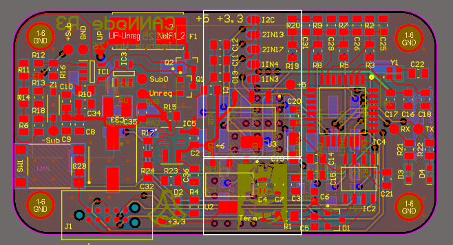

Technical Skills Breakdown
Hardware
- PCB Design (Altium, KiCAD): Over 2 years of experience with Altium and 1 year with KiCAD,
designing over 50 PCBs with some boasting up to 12 layers. To the right is my recent PCB: CANNode. It functions to
collect analog sensor data, translates it to digital and sends it on CANBus. It features unregulated voltage regulation,
circuit protection (OCP, RPP, OVP), and high frequency noise filtering.

- Digital Communication (I2C, SPI, UART, CAN): Worked with multiple digital communication protocols.
Have experience with programming them on microcontrollers, high speed routing on boards, and functional theory.
- PCBA and Testing: Experienced in both testing and manufacturing PCBs. Proficient with soldering iron, reflow soldering, reflow oven, solder stencils, etc. Also proficient with various lab equipment including DMM, Oscilloscope, Logic Analyzer, Power Supply, etc.
- FPGA and VLSI: Experienced with using Verilog to test and synthesize different circuits. Experienced with Cadence Virtuoso to design silicon level chips.
Technical Areas of Interest
Augmented Reality
- Augmented reality has been an interest of mine since the Google Glasses. Now recently with the release of the Apple Vision Pro, I have only become even more interested.
- I would really enjoy working with Meta's orion glasses and working to get them to a smaller form factor. I think some of the limiting factors right now is energy storage. Optimizations to hardware and software are definetly needed before the desireable AR eyeglasses.